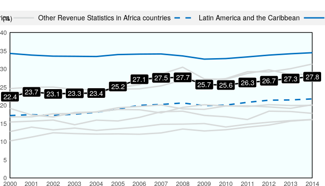
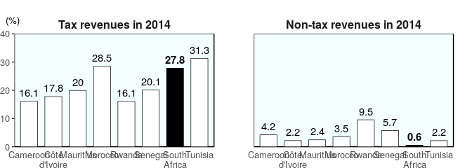
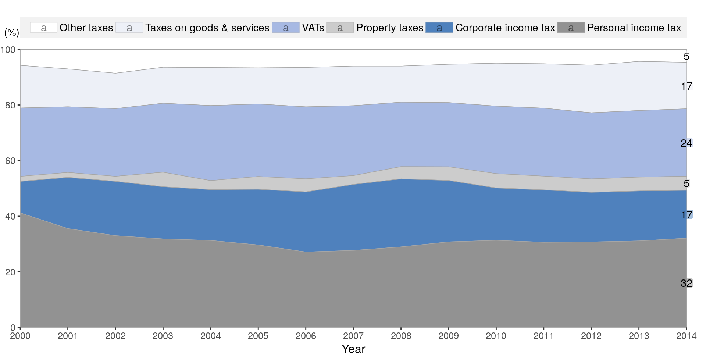
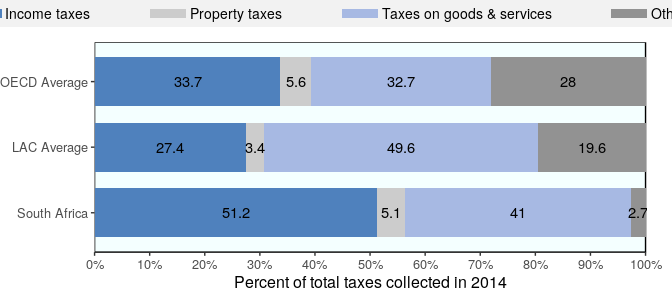

Revenue Statistics in Africa 2016 - South Africa
Tax-to-GDP ratio over time
The tax-to-GDP ratio (total tax revenue as a % of GDP) in South Africa increased by 5.5 percentage points between 2000 and 2014, from 22.4% to 27.8%.
The tax-to-GDP ratio (total tax revenue as a % of GDP) in South Africa increased by 5.5 percentage points between 2000 and 2014, from 22.4% to 27.8%.

Ratios of tax and non-tax revenue to GDP, 2014
In 2014, the tax-to-GDP ratio for South Africa was 27.8%, which is the third highest among the eight African countries featured in Revenue Statistics in Africa. The ratio of non-tax revenue to GDP for South Africa was 0.6%, which is the eighth highest.
In 2014, the tax-to-GDP ratio for South Africa was 27.8%, which is the third highest among the eight African countries featured in Revenue Statistics in Africa. The ratio of non-tax revenue to GDP for South Africa was 0.6%, which is the eighth highest.

Tax structure
Evolution of tax structure from 2000 to 2014
The tax structure, i.e. the tax as a proportion of total tax revenue, in South Africa has evolved since 2000. The tax revenue category that changed the most was personal income taxes which has changed from 41.2% of total taxation in 2000 to 32.1% in 2014.
The tax structure, i.e. the tax as a proportion of total tax revenue, in South Africa has evolved since 2000. The tax revenue category that changed the most was personal income taxes which has changed from 41.2% of total taxation in 2000 to 32.1% in 2014.

Tax structure compared with LAC and the OECD
Income taxes in South Africa are higher than both the LAC and OECD averages as a percent of total taxation. Social security contributions (SSC) are a major component of OECD and LAC countries’ revenues but among the Revenue Statistics in Africa countries, this is only true for Morocco and Tunisia.
The proportion of taxation devoted to goods and services taxes is lower than the LAC average, but higher than the OECD average. Property taxes are higher than the LAC average, but lower than the OECD average.
Income taxes in South Africa are higher than both the LAC and OECD averages as a percent of total taxation. Social security contributions (SSC) are a major component of OECD and LAC countries’ revenues but among the Revenue Statistics in Africa countries, this is only true for Morocco and Tunisia.
The proportion of taxation devoted to goods and services taxes is higher than the LAC average, but lower than the OECD average. Property taxes are lower than the LAC average, but higher than the OECD average.

Source: OECD/ATAF/AUC Revenue Statistics in Africa 2016
http://www.oecd.org/ctp/revenue-statistics-in-africa-9789264253308-en-fr.htm